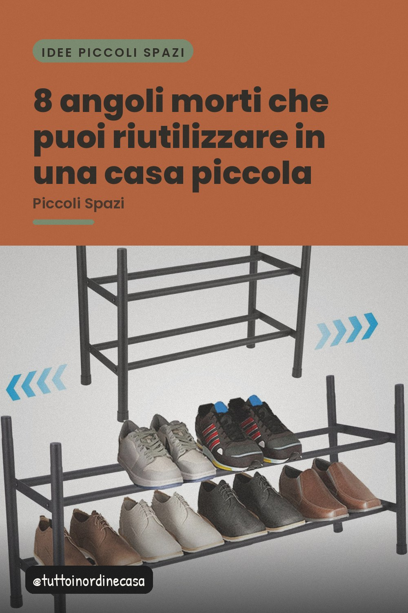
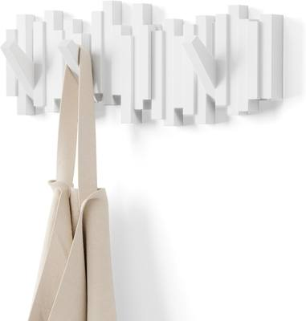
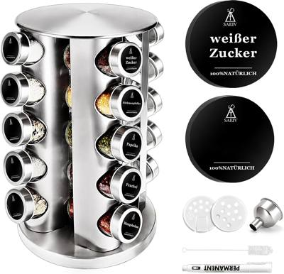

Sopra il frigo, sotto le scale, dietro la porta: otto zone che di solito restano vuote, con la soluzione giusta per ognuna.

In una casa piccola non manca lo spazio: manca l'idea di dove metterlo. La maggior parte delle superfici inutilizzate è in alto o ai lati, dove non si guarda e quindi non si riempie.
Tutto ciò che serve una volta all'anno può stare lì, in contenitori con coperchio: le luci di Natale, la torba del bucato, i bicchieri delle feste. Un metro di mensola a muro regge il peso e chiude la polvere.
Appendiabiti retrattili a tre braccia: sciarpe, borse, cappelli. Si montano in dieci minuti e si spostano quando serve, senza forare il legno.
Carrello strettissimo o mensola a scomparsa: è lo spazio più usato e meno attrezzato di tutta la cucina.
Una mensola sottile con luce integrata libera il piano e risolve l'illuminamento scarso del tavolo da lavoro.
Nastri, borse della spesa, pacchi: un organizzatore a scomparti appendibile tiene l'ordine senza rubare spazio a terra.
Scaffali stretti a più livelli tra frigo e credenza: contenitori impilabili, barattoli, pentole alte.
Dietro o accanto, un pannello appendiabiti trasformativo diventa uno specchio funzionale: chiavi, crema, bracciali.
Un portaspezie girevole a 360 gradi sfrutta la zona più bagnata della casa e ti fa risparmiare ogni giorno.

